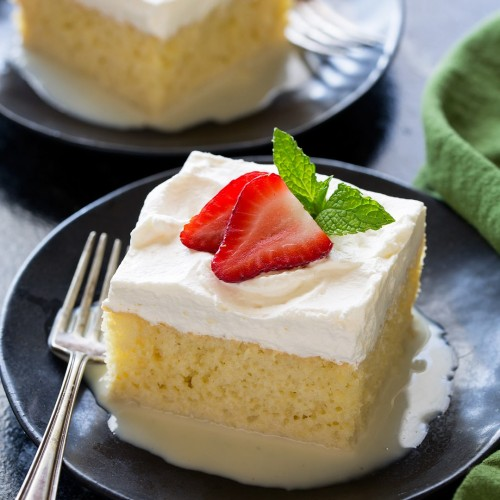

Tres Leches

Tres Leches is one of those desserts you just have to try and it's even better when
made from scratch!
This recipe contains milk, so keep that in mind when deciding on making this.
Ingredients
Cake
- 1 cup all-purpose flour
- 1 1/2 teaspoons baking powder
- 1/4 teaspoon salt
- 5 large eggs , separated
- 1 cup granulated sugar , divided
- 1/3 cup whole milk
- 1 tsp vanilla extract
Milk Mixture
- 12 ounce can evaporated milk
- 14 ounce can sweetened condensed milk
- 1/4 cup whole milk
Whipped Topping
- 1 pint heavy whipping cream
- 3 Tablespoons powdered sugar
- 1/2 tsp vanilla extract
- sprinkle ground cinnamon on top
Steps
- Preheat oven to 350 degrees F. Grease a 9×13'' pan with non-stick
cooking spray.
- In a medium bowl combine flour, baking powder, and salt. Separate
the eggs into two other mixing bowls.
- Add 3/4 cup sugar to the bowl with the egg yolks and mix on high
speed until yolks are pale yellow. Add 1/3 cup milk and vanilla
and stir to combine. Pour the egg yolk mixture over the flour
mixture and stir gently just until combined (don't over-mix).
- Use electric beaters to beat the egg whites on high speed.
As the begin to whip into stiff peaks, gradually mix in the
remaining 1/4 cup of sugar. Fold the stiffly beaten egg whites into
the batter gently, scraping the bottom and sides of the bowl, until
combined.
- Pour batter into prepared pan and smooth it into an even layer.
Bake for 25 to 35 minutes, or until a toothpick inserted in the center
of the cake comes out clean. Remove from the oven and allow cake to
cool completely.
- Combine the evaporated milk, sweetened condensed milk, and whole milk
in a small bowl. Once the cake has cooled use a fork to poke holes all
over the top of the cake.
- Slowly pour the milk mixture over the the top of the cake, making sure
to pour near the edges and all around. Refrigerate the cake for at least
1 hour or overnight, to allow it to soak up the milk.
- In the meantime, whip the heavy cream, sugar and vanilla until stiff peaks.
Smooth over the top of the cake. Sprinkle cinnamon on top.